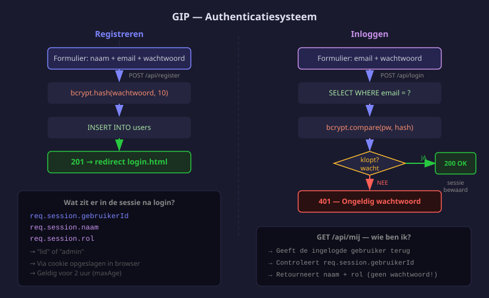

Registreren & inloggen
- Register, login en logout routes toevoegen aan
server.js - Registratie- en loginformulieren koppelen aan de API
- Na inloggen doorsturen op basis van de rol (gebruiker → dashboard om eigen activiteiten te beheren, admin → adminpanel)
- Wachtwoorden hashen met bcrypt

1. Auth-routes in server.js
// ── POST /api/register — nieuw account aanmaken ────────────────────────────────
app.post('/api/register', async (req, res) => {
// req.body bevat de JSON die het registratieformulier meestuurde
const { naam, email, wachtwoord } = req.body;
// Validatie: zijn alle verplichte velden ingevuld?
if (!naam || !email || !wachtwoord) {
return res.status(400).json({ fout: 'Alle velden zijn verplicht' });
}
if (wachtwoord.length < 8) {
return res.status(400).json({ fout: 'Wachtwoord moet minstens 8 tekens zijn' });
}
// Controleer of dit e-mailadres al in gebruik is
const [bestaande] = await pool.execute(
'SELECT id FROM users WHERE email = ?', [email]
);
if (bestaande.length > 0) {
// 409 Conflict: het e-mailadres is al bezet
return res.status(409).json({ fout: 'E-mailadres is al in gebruik' });
}
// bcrypt.hash(wachtwoord, 10):
// - wachtwoord: de leesbare tekst die de gebruiker intypte
// - 10: het aantal "salt rounds" — hoe meer rounds, hoe veiliger maar trager.
// 10 is de industriestandaard: veilig én snel genoeg voor login.
// De hash ziet er zo uit: '$2b$10$...' (altijd 60 tekens lang)
const hash = await bcrypt.hash(wachtwoord, 10);
// Sla de gebruiker op — nooit het originele wachtwoord, altijd de hash!
// rol hoeven we niet mee te geven: de database gebruikt DEFAULT 'gebruiker'
const [r] = await pool.execute(
'INSERT INTO users (naam, email, wachtwoord) VALUES (?, ?, ?)',
[naam, email, hash]
);
// 201 Created: account succesvol aangemaakt
// r.insertId = het AUTO_INCREMENT-id van de nieuwe gebruiker
res.status(201).json({ id: r.insertId, bericht: 'Account aangemaakt' });
});
// ── POST /api/login — inloggen ─────────────────────────────────────────────────
app.post('/api/login', async (req, res) => {
const { email, wachtwoord } = req.body;
// Zoek de gebruiker op via e-mail
const [rijen] = await pool.execute(
'SELECT * FROM users WHERE email = ?', [email]
);
// Geen gebruiker gevonden? Geef DEZELFDE fout als bij een verkeerd wachtwoord.
// Zo weet een aanvaller niet of het e-mailadres bestaat of niet.
if (rijen.length === 0) {
return res.status(401).json({ fout: 'Ongeldig e-mailadres of wachtwoord' });
}
const gebruiker = rijen[0];
// bcrypt.compare(ingevoerd, opgeslagenHash):
// - berekent de hash van 'ingevoerd' en vergelijkt die met de opgeslagen hash
// - geeft true terug als ze overeenkomen, false als niet
const klopt = await bcrypt.compare(wachtwoord, gebruiker.wachtwoord);
if (!klopt) {
return res.status(401).json({ fout: 'Ongeldig e-mailadres of wachtwoord' });
}
// Sessie aanmaken: sla gebruikersgegevens op voor volgende requests.
// req.session is een object dat express-session bijhoudt tussen requests.
req.session.gebruikerId = gebruiker.id; // nodig om te weten wie er ingelogd is
req.session.naam = gebruiker.naam; // voor weergave in de UI
req.session.rol = gebruiker.rol; // 'gebruiker' of 'admin'
// Stuur naam en rol terug — de front-end gebruikt dit om door te sturen
res.json({ bericht: 'Ingelogd', naam: gebruiker.naam, rol: gebruiker.rol });
});
// ── POST /api/logout — uitloggen ───────────────────────────────────────────────
app.post('/api/logout', (req, res) => {
// req.session.destroy() verwijdert de sessie volledig van de server
req.session.destroy(() => {
res.json({ bericht: 'Uitgelogd' });
});
});
// ── GET /api/mij — wie is er ingelogd? ────────────────────────────────────────
app.get('/api/mij', (req, res) => {
// req.session.gebruikerId is undefined als niemand ingelogd is
if (!req.session.gebruikerId) {
return res.status(401).json({ fout: 'Niet ingelogd' });
}
// Stuur de sessiegegevens terug — de front-end roept dit op bij het laden van elke beveiligde pagina
res.json({ id: req.session.gebruikerId, naam: req.session.naam, rol: req.session.rol });
});Dit is bewust: als je een andere fout geeft voor "e-mail niet gevonden" versus "verkeerd wachtwoord", kan een aanvaller raden welke e-mailadressen bestaan in je database.
2. Registratieformulier
<!-- Client/register.html -->
<section class="form-container">
<h2>Account aanmaken</h2>
<form id="register-form">
<label>Naam<input type="text" id="naam" required></label>
<label>E-mail<input type="email" id="email" required></label>
<label>Wachtwoord (min. 8 tekens)<input type="password" id="wachtwoord" required></label>
<button type="submit">Registreren</button>
</form>
<p id="foutmelding" class="fout" hidden></p>
<p><a href="login.html">Al een account? Inloggen</a></p>
</section>3. Login-formulier
<!-- Client/login.html -->
<section class="form-container">
<h2>Inloggen</h2>
<form id="login-form">
<label>E-mail<input type="email" id="email" required></label>
<label>Wachtwoord<input type="password" id="wachtwoord" required></label>
<button type="submit">Inloggen</button>
</form>
<p id="foutmelding" class="fout" hidden></p>
<p><a href="register.html">Nog geen account? Registreren</a></p>
</section>4. auth.js (front-end)
// Client/js/auth.js
// Dit bestand wordt geladen op zowel register.html als login.html.
// Elke sectie controleert eerst of het formulier op de huidige pagina bestaat.
// ── Registratie ───────────────────────────────────────────────────────────────
const registerForm = document.getElementById('register-form');
// Alleen uitvoeren als we op register.html zijn (anders is registerForm null)
if (registerForm) {
registerForm.addEventListener('submit', async (e) => {
// e.preventDefault() voorkomt dat het formulier de pagina herlaadt
e.preventDefault();
const naam = document.getElementById('naam').value;
const email = document.getElementById('email').value;
const wachtwoord = document.getElementById('wachtwoord').value;
// fetch() stuurt een POST-request naar de server
const response = await fetch('/api/register', {
method: 'POST',
headers: { 'Content-Type': 'application/json' }, // vertel de server dat we JSON sturen
body: JSON.stringify({ naam, email, wachtwoord }) // zet JS-object om naar JSON-tekst
});
const data = await response.json();
if (response.ok) {
// response.ok = true als de statuscode 200-299 is (hier: 201)
// Registratie gelukt → doorsturen naar loginpagina
window.location.href = '/login.html';
} else {
// Fout (bv. e-mail al in gebruik) → toon de foutmelding
const fout = document.getElementById('foutmelding');
fout.textContent = data.fout; // tekst van de server instellen
fout.hidden = false; // element zichtbaar maken
}
});
}
// ── Login ─────────────────────────────────────────────────────────────────────
const loginForm = document.getElementById('login-form');
// Alleen uitvoeren als we op login.html zijn
if (loginForm) {
loginForm.addEventListener('submit', async (e) => {
e.preventDefault();
const email = document.getElementById('email').value;
const wachtwoord = document.getElementById('wachtwoord').value;
const response = await fetch('/api/login', {
method: 'POST',
headers: { 'Content-Type': 'application/json' },
body: JSON.stringify({ email, wachtwoord })
});
const data = await response.json();
if (response.ok) {
// Login gelukt — stuur door op basis van de rol die de server terugstuurde:
// admin → admin.html (adminpanel)
// gebruiker → dashboard.html (eigen activiteiten)
window.location.href = data.rol === 'admin' ? '/admin.html' : '/dashboard.html';
} else {
const fout = document.getElementById('foutmelding');
fout.textContent = data.fout;
fout.hidden = false;
}
});
}5. Admin aanmaken via MySQL Workbench
De admin maak je manueel aan. Genereer eerst een bcrypt-hash van het wachtwoord:
# Éénmalig uitvoeren vanuit de Server-map
node -e "import('bcrypt').then(b => b.default.hash('Admin1234!', 10).then(h => console.log(h)))"Kopieer de hash en voer in Workbench uit:
UPDATE users
SET wachtwoord = '$2b$10$...(kopieer hash hier)...', rol = 'admin'
WHERE email = 'admin@sportclub.be';| Route | Wat |
|---|---|
POST /api/register | Gebruiker aanmaken + wachtwoord hashen |
POST /api/login | Wachtwoord vergelijken + sessie aanmaken |
POST /api/logout | Sessie vernietigen |
GET /api/mij | Sessiedata opvragen |
Oefeningen
Voeg de auth-routes toe en test het volledige register/login-flow.
- Voeg de vier auth-routes toe aan
server.js - Maak
register.htmlenlogin.htmlaan - Maak
Client/js/auth.jsaan - Registreer een nieuw lid via de browser
- Log in met dat account en bevestig dat je op
dashboard.htmlterechtkomt - Maak de admin aan via MySQL Workbench
- Log in als admin en bevestig dat je op
admin.htmlterechtkomt
Huistaak
Opdracht: Volledig authenticatiesysteem
Deel 1 — 4 punten: Back-end
- Register-route met validatie (alle velden verplicht, wachtwoord min. 8 tekens, e-mail uniek)
- Login-route met bcrypt.compare
- Logout-route en
/api/mijroute
Deel 2 — 4 punten: Front-end
- Registratieformulier met foutmelding
- Login-formulier met redirect op basis van rol
- auth.js koppelen aan beide formulieren
Deel 3 — 2 punten: Admin
- Admin aanmaken via MySQL Workbench
- Login als admin → doorsturen naar admin.html (even een lege pagina is OK)
Vragenlijst
Controleer of je de leerstof van dit hoofdstuk begrijpt.
Waarom sla je wachtwoorden nooit als plain text op?
Wat doet bcrypt.hash(wachtwoord, 10)?
Wat sla je op in req.session na een succesvolle login?
Welke statuscode geeft de login-route terug bij een verkeerd wachtwoord?
Naar welke pagina wordt een lid doorgestuurd na inloggen?